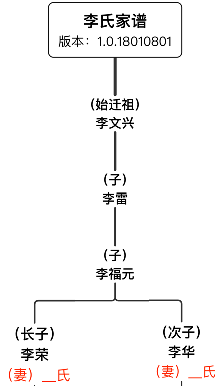
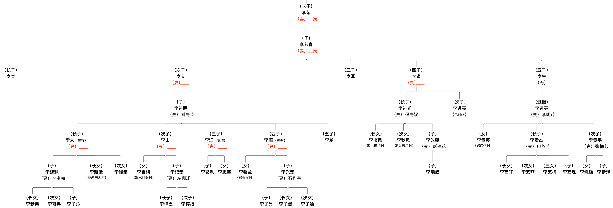
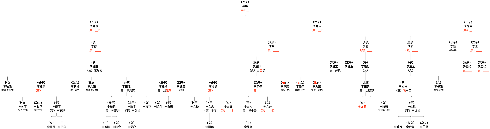

版本：v1.0.18010801
第二修订版
版权：李氏家族
编著：李进亮（七世）、李新保（八世）、李瑞平（九世）、李瑞宇（九世）
修订日期：（农历）二零一七年十一月下
李氏一家于明永乐年间（公元1403年——公元1424年）应诏由山西洪洞县迁此开山种地，置产立庄。
不久，日子越过越红火，便在村西山脚河旁修建了一盘水磨，四乡八邻陆续来此碾米磨面。
之后人们便叫此村为“水磨村”，并沿用至今。
【备注】：“永乐”为明朝第三个皇帝明成祖朱棣的年号（公元1403年——公元1424年）
父慈子孝，兄友弟恭，
夫正妇顺，内外有别，
尊幼有序，礼义廉耻。
士农工商，各守一业。


